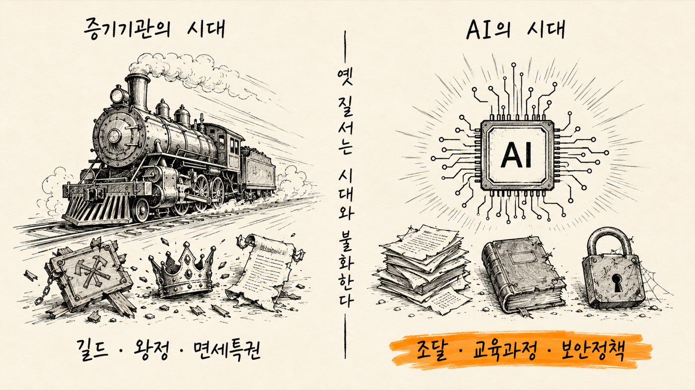
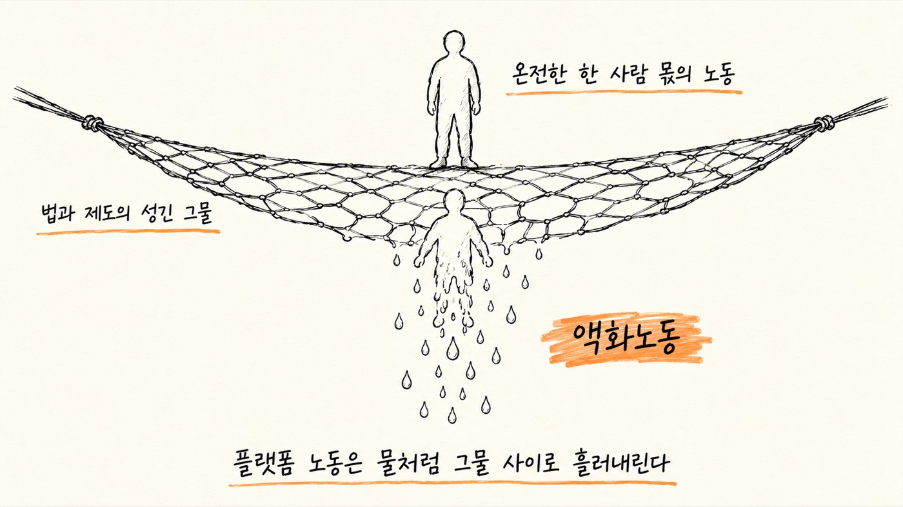

AI 전환의 걸림돌과 생태계적 관점의 부재
한국 제조 중소·중견기업에는 세 가지가 없다 — 그리고 셋은 얽혀 있어 따로 풀 수 없다.
80.7%“AI 전문 인력이 없다” (충원도 안 함 82.1%)
73.6%“AI 투자가 부담” (중소기업은 79.7%)
파편화설비별로 분절된 제조 데이터 · 레거시 시스템

생태계로 접근하지 않아 실패했다 — 세 가지 반면교사
삼성전자 파운드리파운드리는 팹리스–디자인–IP–파운드리–패키징의 생태계 전쟁. IP 파트너 10배 적고 패키징 10년 뒤처진 채 홀로 싸웠다.
혁신도시허허벌판에 건물만 꽂았다. 배우자 일자리가 없어 맞벌이 부부는 “안 가는 게 아니라 못 간다”.
지방 신도심인구는 안 느는데 아파트만 지어 원도심 공동화. 창원–부산 50km가 ‘마음의 거리 500km’ — 통근 전철은 늘 타당성 난항.
생태계가 번성하는 세 가지 조건
종 다양성단일 품종 감자에 의존한 아일랜드는 역병 하나로 100만 명이 굶어 죽었다.
에너지와 물질의 순환분해와 재생산으로 되돌아가야 생태계다. 순환이 끊기면 무너진다.
개방성과 연결성닫힌 생태계는 근친교배 우울증(합스부르크 신드롬)으로 취약해진다.
산업 AX를 위한 지역 금융 — 돈
공장은 지방에, 돈은 수도권에. 이 구조를 둔 채 산업 AX는 불가능하다.
공장은 지방에, 돈은 수도권에
전체 대비 비수도권의 비중 (2025 금융위원회)
격차 −13.2%p, 전년보다 오히려 확대
모델 1 · 미국 노스다코타은행 — ‘은행들의 은행’
- 주정부의 모든 세금·수수료가 법으로 예치되는 안정 자본줄 (약 71억 달러)
- 소매 영업 대신 참여 대출로 지역 은행의 대출 능력을 키우는 파트너
- 지점 1개, 마케팅 제로 → ROI 15.8%, 100년 연속 흑자, 수익은 공공사업으로 환원
- 산업위원회 + 전문 경영인 체제로 정치 외풍 차단

보수적으로 분산된 대출 포트폴리오
특정 산업의 위기가 은행 전체로 번지지 않게
상업학자금주택농업 10%
모델 2 · 독일 슈파르카세 — 지역을 떠나지 못하는 돈
- 지역주의 원칙: 법으로 해당 지역 안에서만 영업 — 예금이 수도권으로 새지 않는다
- 관계 금융: 재무제표 대신 경영자 평판·기술 잠재력 같은 연성 정보로 심사
- 하우스뱅크: 독일 중소기업 70%의 주거래은행 — 비 올 때 우산을 뺏지 않는다
- 결과: 히든 챔피언 1,500개, 그룹 신용등급 A+, 100년 무파산
| 한국 금융 | 독일 지역 금융 | |
|---|---|---|
| 심사 | 부동산 담보 · 신용점수 | 장기 신뢰 · 사업 지속 가능성 |
| 목적 | 주주 이익 — 수도권 대형 대출 집중 | 비영리 공공성 — 지역 공헌·산업 육성 |
| 구조 | 거대 은행의 중앙집권형 | 수백 개 독립 은행의 분권 연합체 |
지역 기반의 인재 생태계 — 사람
- 지역 거점 대학이 인재 양성의 중심 — 대학·기업·연구소가 한 팀으로
- 젊은 인재 양성 + 기존 인력의 리스킬링·업스킬링
- 대중교통 확충이 반드시 함께 — 맞벌이 부부가 살 수 있어야 생태계가 지속된다
창원–부산 직선거리 50km, 마음의 거리 500km. 부부가 함께 살 수 없는 특구는 하나 마나 한 말이 된다.
생태계 성장을 위한 데이터 공유 연대 — 데이터
서방 제1의 제조창인 한국이 현장 데이터로 학습한 세계 최고의 피지컬 AI를 갖는 길. 지원 대상은 여섯 기준으로 고른다.
파급성·확산성표준기업·공급망 중심·협회 주도 — 성공하면 즉시 복제되는 레퍼런스
대표성·균형성권역·업종·규모별 균형. 산업단지+거점대학+지역금융 삼각편대 우선
실행 가능성센서·저장장치, 실력 있는 현장 책임자, 실패에서 배우는 조직
협업 우선앵커기업이 협력사와 과제를 함께 설계하는 곳
표준화 기여데이터 스키마·룰 북을 산업 공용으로 내보낼 곳
공공성·사회적 가치에너지·안전사고·불량률을 줄이고 지역 일자리를 늘릴 곳
지원의 조건은 하나 — 성과를 공유하라. 한 기업의 성공이 곧 생태계의 성공이 되어야 한다.
‘독파모’와 K-휴머노이드 연합 — 생태계로 도전한다
모델 하나 만들기가 아니라 풀스택 생태계 전체에 도전한다. 처음부터 벤처·대기업·대학이 한 팀.

독파모에 모델 회사만 있는 게 아니다 — 층위별 참여 생태계
| 층위 | 참여 |
|---|---|
| 모델 | LG · 업스테이지 · SKT · 네이버 · 엔씨 |
| 인프라·하드웨어 | 퓨리오사 · 리벨리온 · 래블업 |
| 데이터 | 플리토 · 셀렉트스타 · 에이아이웍스 · 라이너 · 네이버 |
| 서비스·산업 확산 | 한글과컴퓨터 · 올거나이즈 · 포스코 · 롯데 · 크래프톤 · 포티투닷 |
| 대학 | 모든 팀에 필수 — 1,000억+ 매개변수 학습 경험은 책으로 못 배운다 |
시작 4개월 만에 전 세계 톱 20에 한국 모델 진입 — ‘주목할 만한 모델’엔 다섯 팀 전부.
K-휴머노이드 연합 — 4개 컨소시엄 × 역할 매트릭스
1조 원+2030년까지 민관 투자
60kg2028년 목표: 관절 50+ · 운반 20kg · 초속 2.5m
풀스택뇌(AI) + 몸(HW) + 심장·신경(배터리·반도체) 동시 개발
| 가전 (LG) | 물류 (CJ/삼성) | 화학·정유 (SK) | 조선 (HD현대) | |
|---|---|---|---|---|
| AI 두뇌 | 투모로로보틱스 | 투모로로보틱스 | 투모로로보틱스 | 투모로로보틱스 · 부산대 |
| 본체 | 로브로스 | 레인보우로보틱스 | 홀리데이로보틱스 | 에이로봇 |
| 손·모터 | 로보티즈 · 패러데이다이나믹스 | 에이딘로보틱스 · SPG | ||
| 배터리 | LG에너지솔루션 | 삼성SDI | — | 삼성SDI |
| 수요처(실증) | LG전자 스마트팩토리 | CJ대한통운 · 롯데글로벌로지스 | SK에너지 울산 정유공장 | HD현대미포 · HD현대로보틱스 |
시대와 불화하는 제도들
AI가 사람을 구할 수 있는 곳마다 같은 열쇠가 필요하다 — 데이터 통합. 그런데 제도가 시대와 불화한다.
복지 사각지대탈북 모자 아사, 송파 세 모녀 — 소득·건보·고용 데이터를 통합하면 선제 발굴이 가능했다
재난 예방산불·적조·강남 침수 — 기상·소방·지자체 데이터를 연결하면 예측과 사전 조치
전세 사기등기·거래·세금·개발 정보의 단절이 위험의 근원 — 통합하면 위법 의심 거래 자동 추출
국회 의정 지원1톤 트럭 분량의 종이 대신 전자유통 일원화 — 요약·과거 질의·해외 사례에 되먹임 학습까지
데이터 통합! 구슬처럼 흩어진 데이터를 꿰지 못하면 AI는 아주 비싼 장식품이 된다.

낡은 제도 1 · 3년 6개월 걸리는 조달

낡은 제도 2 · 7~10년 주기의 교육과정
2022 개정현행 교육과정 — 챗GPT가 존재하지 않던 시절에 설계됨
2024~26학년별 순차 적용 중 (올해 초1~6 · 중1~2 · 고1~2)
중3 · 고3아직 2015 개정 적용 — 10년 전에 정한 과정으로 배운다
낡은 제도 3 · 보안정책 — 공인인증서의 교훈
1997년 OECD 암호화정책 8개 권고를 한국은 하나도 지키지 않았다.
| OECD 권고 (1997) | 한국이 한 일 |
|---|---|
| 법을 지키는 한 어떤 수단이든 선택 가능해야 | 공인인증서 하나만 강제 — 다른 수단은 제초제 뿌린 듯 고사 |
| 도구는 시장의 요구에 따라 발전해야 | 십수 년간 신기술이 설 자리 없음 — 안면·지문인식은 해외 차지 |
| 국제 호환 표준과 함께 발전해야 | 전자상거래 갈라파고스화 (‘천송이 코트’) — exe 파일로 갈아탄 게 개선책 |
| 제공자는 상응하는 책임을 져야 | 공인인증서만 쓰면 금융기관 면책 — 피해는 사용자 몫 |
| 국제 거래에 방해가 되지 않아야 | 치명적인 방해가 됐다 |
- 2026년에도 공무원은 모바일로 일할 수 없고 클라우드도 제대로 못 쓴다
- 취약점을 숨겨야 하는 정보기관(국정원)이 취약점을 제거하는 역할까지 — 목표가 상충 (미국은 NSA/CISA 분리)
- “규정을 충족해야 클라우드를 쓸 수 있다”가 아니라 “클라우드를 쓰기 위해 보안규정이 발전해야 한다”
질문이 틀린데 답이 맞을 순 없습니다.
용역으로 AI 정부를 만들 수 있을까?
2025년 대전 국가정보자원관리원 화재 — 종합대책 발표 1년 뒤에 벌어진 일.
약속
- “재해복구시스템이 있어 금세 재가동”
- “백업으로 3시간 내 가동”
- “EMP 공격에도 버티는 공주 재해복구센터”
- 사고 1년 전 범정부 종합대책 발표
현실
- 하나도 맞지 않았다
- 배터리를 격리하지 않았다 — 4년 전 카카오 사태 때 이미 지적된 것
- 건물이 무너져도 살아남는 게 재해복구다 (9·11의 모건스탠리)

왜 반복되는가 — 그리고 영국의 답
- 실패의 구조: IT 전문성 부족(고시+순환보직) · 거버넌스 부재(PRD 못 쓰는 간부) · 하청의 하청(반토막 예산) · 1~2년마다 바뀌는 운영사 → 아무도 히스토리를 모른다
- 영국도 같았다: NHS IT 96억→195억 달러, 500페이지 사이트에 연 7,700만 달러
- 답: 시빅 해커 등 민간 최고 엔지니어로 GDS를 만들고 ‘처음부터 디지털’ — 디자인 10원칙 공개
사용자 요구에서 시작하라
덜 하라
데이터로 설계하라
단순하게 만들기 위해 애쓰고 애써라
반복하라, 또 반복하라
이것은 모두를 위한 것이다
맥락을 이해하라
웹사이트가 아니라 서비스를 구축하라
일관성을 유지하되 획일적이지 마라
공개하라, 그것이 더 좋게 만든다
1,882→1정부 사이트를 GOV.UK 하나로 (1년 내 출시)
−70%운영비 즉각 절감
5.8조 원3년간 절감 (35.6억 파운드)
UN 1위5년 내 전자정부 1위 + 올해의 디자인상
‘진화가 아니라 혁명을!’ — 용역으로는 AI 정부를 만들 수 없다.
AI 기본사회
생산성은 치솟는데 그대로 두면 일자리는 사라지고 부는 소수에 집중된다 — 축복을 가장한 저주.

“지능의 시대의 결정적 특징은 대대적 번영이 될 것” — 샘 올트먼
“AI와 로봇이 모든 필요를 충족하면 돈은 더 이상 필요 없다” — 일론 머스크
그러나 — 재분배가 저절로 온 적은 한 번도 없다
1930년대뉴딜 — 대공황과 공산주의의 위협이 배경
해방 후한국·대만의 토지 재분배 — 역시 위협에 대한 대응
1945~70s복지국가 — 전후 재건과 냉전 체제
최근 40년IT 혁명에도 노동소득분배율은 하락 — 극우 물결의 토양
- 지금은 더 어렵다: 국제 협력 형해화, 미중 갈등, 조세 천국
- 프랑스의 3% 디지털세는 미국의 25% 보복 관세 앞에 철회됐다 (5개국 모두) — 3%도 못 걷는데 AI세는?
- 인공지능은 지금 불공평한 증폭기로 작동하고 있다
여주 구양리와 신안군 — AI 기본사회의 살아 있는 모델
| 신안군 태양광 연금 | 여주 구양리 햇빛두레 | |
|---|---|---|
| 방식 | 태양광·풍력에 주민 지분 30% 의무화 | 64가구 전체 참여, 100% 주민 소유 (1MW) |
| 정부 재원 | 0원 | 보조금 0원 (15억 투자, 장기저리 융자 포함) |
| 성과 | 누적 300억+ · 군민 49% 수혜 · 연 최대 600만 원 | 연 1.2억 — 마을 점심 무료, 마을버스 무료 |
| 파급 | 2028 해상풍력 완공 시 전 군민 연 600만 원, 인구 179→710명 | 대부분의 마을이 복제 가능한 모델 |

같은 원리를 AI로 확장하면
AI 인프라 국부펀드태양광에 투자하듯 AI 인프라에 투자하고, 수익을 전 국민이 배당으로
데이터 사용료공공·회색지대 데이터는 공유자원 — 한국인의 데이터를 쓰면 사용료를
공유자원의 재정의국공유지 25.6%로 사회주택 리츠(연 4%대) · 연 8,000억을 보전해주는 버스는 공영제로 — 노선을 수요에 맞춰 조정
AI는 천재지변이 아닙니다. 우리가 만들어가는 것이고, 우리가 결정할 수 있는 것이어야 합니다. 신안군과 구양리는 살아 있는 증거입니다. 제국주의 경험 없이 선진국이 된 유일한 나라, 풀스택과 피지컬 AI에 도전할 수 있는 나라가 전 세계에 포용적 AI의 모범을 보여줄 수 있습니다. 함께 애를 씁시다.